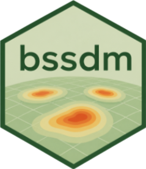

Package index
-
Climatch-class - S4 class to represent a climatch SDM.
-
Rangebag-class - S4 class to represent a range bagging SDM.
-
climatch() - Climatch SDM model building method
-
exdet() - Extrapolation Detection for Species Distribution Models
-
hawkweed - Cleaned global occurrences of Hieracium pilosella (hawkweed)
-
mess() - Calculate Multivariate Environmental Similarity
-
plot(<ExdetResult>) - Plot method for ExdetResult objects
-
plot(<MessResult>) - Plot method for MessResult objects
-
predict(<Climatch>) - Climatch SDM predict method
-
predict(<Rangebag>) - Range bagging SDM predict method
-
rangebag() - Range bagging SDM model building method